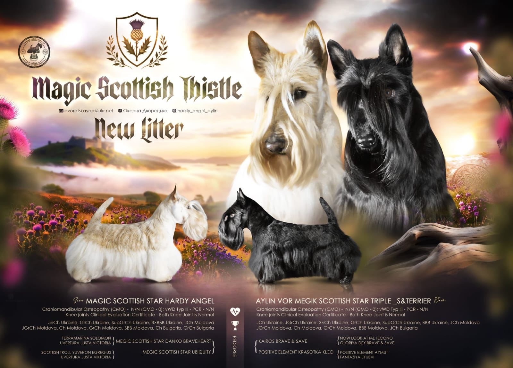
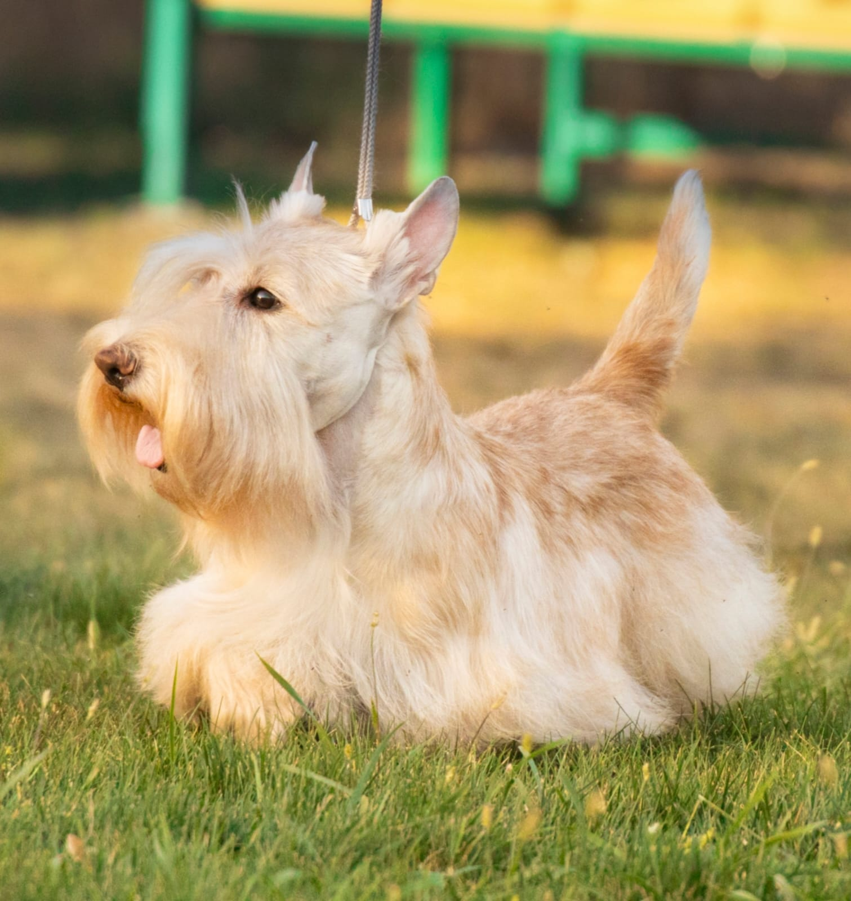
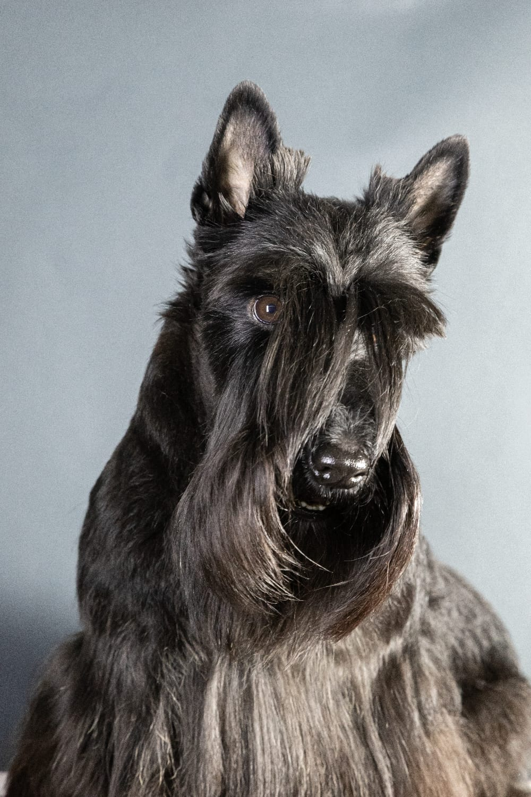

Розплідник шотландських тер'єрів"Magic Scottish Thistle"

Шотландський тер'єр — це справжній джентльмен серед собак:
- розумний
- відданий
- сміливий
- впевнений у собі
Незважаючи на компактний розмір, скотч-тер'єр має сильний характер та безмежну любов до своєї родини.
Наші цуценята: мають міцне здоров'я та породний темперамент; активні, допитливі та контактні.
Шотландський тер'єр стане чудовим компаньйоном для активної родини, а також для людей, які цінують
інтелект, незалежність і благородну зовнішність собаки.
Батько цуценят - Magic Scottish Star Hardy Angel

Mає титули - 5xCh Ukraine, GrCh Ukraine, SupGrCh Ukraine, 3xBBB Ukraine, JCh Moldova, JGrCh Moldova, Ch Moldova, GrCh Moldova, BBB Moldova, Ch Bulgaria, GrCh Bulgaria.
Мати цуценят - Aylin Vor Megik Scottish Star Triple S&Terrier

Має титули - JCh Ukraine, JGrCh Ukraine, 3xCh Ukraine, GrCh Ukraine, SupGrCh Ukraine, BBB Ukraine, JCh Moldova, JGrCh Moldova, Ch Moldova, GrCh Moldova, BBB Moldova, JCh Bulgaria.
Інформація про стан здоров'я
На обох батьків є: Генетичні породні тести - Craniomandibular Osteopathy (CMO) - Genotype N/N (CMO - 0); vWD Typ III - PCR - Genotype N/N; Тест на пателлу - Knee joints Clinical Evaluation Certificate - Both Knee Joint is Normal.
Повернутись до початку сторінки